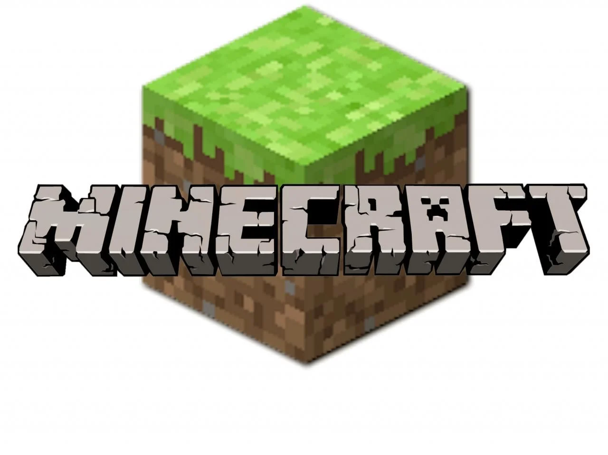

Vad är Minecraft.
Minecraft är ett spel som har fångat miljontals spelares fantasi världen över sedan det släpptes 2011. Skapat av Markus "Notch" Persson och utvecklat av Mojang Studios, är det en sandlåda av oändliga möjligheter och kreativitet.
I Minecraft kastas spelarna in i en öppen värld bestående av kuber, där de kan utforska, bygga och överleva. Spelets huvudsakliga spelläge är "Survival", där spelarna börjar med inget annat än sina nävar och måste samla resurser från den omgivande miljön för att överleva. Det innebär att hugga ner träd för trä, gräva efter mineraler som järn och guld, och odla grödor för mat. Spelarna måste också hantera monster som skelett, creepers och zombies som dyker upp när natten faller.
Utöver överlevnadsläget finns det också "Creative" där spelarna har obegränsade resurser och kan bygga vad de än kan tänka sig utan begränsningar. "Adventure" läge ger spelare specifika mål och uppdrag att slutföra, medan "Spectator" läge låter dem utforska världen utan att påverka den.
En stor del av Minecrafts charm ligger i dess pixelartstil och det faktum att världen är helt proceduriskt genererad, vilket betyder att ingen spelvärld är den andra lik. Spelarna kan också anpassa sina egna världar genom att lägga till modifikationer (mods) som lägger till allt från nya varelser till nya spelregler.
Men det är inte bara själva spelet som är imponerande, utan Minecrafts gemenskap har också skapat en enorm mängd kreativt innehåll. Från episka slott och städer till funktionella datorer och kalkylatorer som är byggda inuti spelet, har spelarna visat upp sina imponerande skapelser på plattformar som YouTube och Reddit.
Sammanfattningsvis är Minecraft ett spel som är så mycket mer än summan av sina kuber. Det är en värld där endast din fantasi sätter gränserna, och där varje dag kan vara ett nytt äventyr.
| Minecraft Player | Specialty |
|---|---|
| Mumbo Jumbo | Redstone Genius |
| Dream | PvP (Player vs. Player) Expert |
| Xem | Speedrunner |
| Grian | Build Master |
| Allround | Skilled in multiple areas |
Min favorit minecraft spelare
Technoblade är en mycket känd Minecraft-spelare och YouTuber som har fått en stor och hängiven följarskara för sin expertis inom spelet, särskilt inom PvP (Player vs. Player) och Hypixel-spel. Hans verkliga namn är Dave, och han är känd för sin karaktäristiska röst och humoristiska kommentarer i sina videor.
Bakgrund och Karriär:
Technoblade började sin YouTube-karriär 2013 och har sedan dess blivit en av de mest framstående Minecraft-innehållsskaparna på plattformen. Han har ett rykte för att vara en av de bästa PvP-spelarna i Minecraft-communityn och har vunnit otaliga turneringar och tävlingar.
PvP-mästare:
En av Technoblades största styrkor är hans PvP-färdigheter. Han är känd för att vara oerhört skicklig i strider mot andra spelare, och hans strategiska tänkande och snabba reflexer har gjort honom till en mästare inom detta område. Han har deltagit i och vunnit många Hypixel-turneringar och är känd för att vara en av de bästa Bedwars-spelarna i världen.
Dream SMP:
Technoblade är också en medlem av det berömda Dream SMP-servern, en Minecraft-server där olika populära Minecraft-spelare och YouTubers samlas för att spela och skapa berättelser tillsammans. Hans närvaro på Dream SMP har gjort honom ännu mer populär och har gett upphov till många minnesvärda ögonblick och historier på servern.
Filantropi:
Utöver sin framgång inom Minecraft har Technoblade även använt sin plattform för att samla in pengar till välgörenhet. Han har hållit välgörenhetsströmmar där han spelar och samlar in donationer till olika organisationer, vilket visar på hans engagemang för att använda sin popularitet för att göra gott.
Humor och Personlighet:
Technoblades videos är kända för hans humoristiska kommentarer och sarkastiska stil. Han har en unik förmåga att underhålla sina tittare samtidigt som han visar upp sin skicklighet i spelet. Hans skämt och kommentarer har blivit ikoniska inom Minecraft-communityn och har bidragit till att bygga hans lojala följarskara.
Slagordet "Never Dies":
En av Technoblades mest kända fraser är "Technoblade never dies", vilket har blivit något av ett motto för honom och hans fans. Detta refererar till hans förmåga att överleva i svåra situationer och hans envishet när det gäller att fortsätta kämpa, både i spelet och utanför det.
Technoblade är utan tvekan en av de mest inflytelserika Minecraft-spelarna och YouTubers som finns, och hans bidrag till spelets community och underhållning är omfattande. Han fortsätter att vara en favorit bland många för sin skicklighet, humor och dedikation till spelet och dess community.